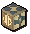

")
Magic - Extra Features
The Magic Guild | Summoning Familiars | Enchanted Crossbow Bolts
Training Hints and Tips | Magic Enhancements | Blastboxes and Surgeboxes | Dungeoneering | Quests Providing Magic Experience | Activities
Training Hints and Tips | Magic Enhancements | Blastboxes and Surgeboxes | Dungeoneering | Quests Providing Magic Experience | Activities
The Magic Guild

It is also possible for Members to drink a Magic potion, which will temporarily increase their Magic skill by 4 levels, please see the Herblore section of the Manual for more details.
As you enter the guild you will see Wizard Distentor, who is the head of the Guild. He is there to welcome you and to teleport you to the rune essence mine if you so wish.
Zavistic Rarve is the Grand Secretary of the Guild and is able to tell you what you can do while you are here.
To access the rune shop you will need to speak to the rune shop owner; he has a plentiful supply of runes and a selection of staves.
The second floor consists of three magic portals as well as a vial respawn on the table.
The portals lead to:
- The east portal teleports you to the Wizards' Tower, south of Draynor Village.
- The south portal teleports you to the Dark Wizards' Tower, north of the Crafting Guild.
- The west portal teleports you to Thormac the Sorceror's house, just west of Catherby.
Don't forget to visit Wizard Frumscone in the dungeon area of the Guild. Here you will find level 24 zombies in a cage, which you can practice your Magic on. If you wish to collect their drops, don't forget to bring runes to cast telekinetic grab.
Summoning Familiars
Using the Summoning skill, you'll find that there are a few familiars that might be useful for training your Magic. Of particular note is the wolpertinger, whose special move boosts your Magic level.
Enchanted Crossbow Bolts

In your spellbook you will discover the level 4 spell 'Enchant bolt'. This is a collection of spells that allows you to enchant whatever gem-tipped bolts you happen to have on you. As it is the gem that stores the enchantment, only gem-tipped bolts can be enchanted in this way.
As you can see, enchant bolt is not necessarily a level 4 spell, and you will need a higher Magic level in order to enchant the higher level bolts.
If you have the appropriate type of bolt equipped or in your inventory, as well as the requisite runes, you will be able to enchant your bolts. Each casting of the spell will enchant up to ten of the same type of bolt (it will only enchant fewer if you do not have ten equipped or in your inventory).
| Bolt | Enchantment | Magic Level | Required Runes | Effect | Experience Gained |
||
![[image]](../../img/main/kbase/items/crossbows/bolts/bronze_opal.gif) Opal |
Lucky lightning | 4 |
![[image]](../../img/main/kbase/items/runes/crune.gif) Cosmic rune x1 |
![[image]](../../img/main/kbase/items/runes/arune.gif) Air rune x2 |
Chance of a lightning bolt striking your opponent and causing extra damage. | 9 | |
![[image]](../../img/main/kbase/items/crossbows/bolts/blurite_jade.gif) Jade |
Earth's fury | 14 |
Cosmic rune x1 |
![[image]](../../img/main/kbase/items/runes/erune.gif) Earth rune x2 |
Chance of knocking your opponent to the ground; agile opponents may resist this. | 19 | |
![[image]](../../img/main/kbase/items/crossbows/bolts/iron_pearl.gif) Pearl |
Sea curse | 24 |
Cosmic rune x1 |
![[image]](../../img/main/kbase/items/runes/wrune.gif) Water rune x2 |
Chance of a mighty bolt of water crashing down upon your opponent. This is negated by opponents wielding water staves, but is increased against fiery opponents and those wearing certain fiery garments. | 29 | |
![[image]](../../img/main/kbase/items/crossbows/bolts/steel_topaz.gif) Red topaz |
Down to earth | 29 |
Cosmic rune x1 |
![[image]](../../img/main/kbase/items/runes/frune.gif) Fire rune x2 |
Chance of lowering your opponent's Magic level. Only works on other players. |
33 | |
![[image]](../../img/main/kbase/items/crossbows/bolts/mithril_sapphire.gif) Sapphire |
Clear mind | 7 |
Cosmic rune x1 |
Water rune x1 |
![[image]](../../img/main/kbase/items/runes/mrune.gif) Mind rune x1 |
Chance of lowering your opponent's Prayer points and giving part of them to you. Only works on other players. |
17 |
![[image]](../../img/main/kbase/items/crossbows/bolts/mithril_emerald.gif) Emerald |
Magical poison | 27 |
Cosmic rune x1 |
Air rune x3 |
![[image]](../../img/main/kbase/items/runes/nrune.gif) Nature rune x1 |
Bolts count as being poisoned, with an increased chance of poisoning your opponent. | 37 |
![[image]](../../img/main/kbase/items/crossbows/bolts/adamantite_ruby.gif) Ruby |
Blood forfeit | 49 |
Cosmic rune x1 |
Fire rune x5 |
![[image]](../../img/main/kbase/items/runes/blrune.gif) Blood rune x1 |
Chance of losing 10% of your current life points to remove 20% of your opponent's current life points. Does not work if you have less than 10% of your max life points left. | 59 |
![[image]](../../img/main/kbase/items/crossbows/bolts/adamantite_diamond.gif) Diamond |
Armour piercing | 57 |
Cosmic rune x1 |
Earth rune x10 |
![[image]](../../img/main/kbase/items/runes/lrune.gif) Law rune x2 |
Chance of negating a sizeable portion of your opponent's Defence against Ranged attacks. | 67 |
![[image]](../../img/main/kbase/items/crossbows/bolts/runite_dragonstone.gif) Dragonstone |
Dragon's breath | 68 |
Cosmic rune x1 |
Earth rune x15 |
![[image]](../../img/main/kbase/items/runes/srune.gif) Soul rune x1 |
Chance of inflicting a dragon's breath hit against your opponent, unless they have an anti-dragonbreath shield, or are some type of fiery beast such as a dragon. | 78 |
![[image]](../../img/main/kbase/items/crossbows/bolts/runite_onyx.gif) Onyx |
Life leech | 87 |
Cosmic rune x1 |
Fire rune x20 |
![[image]](../../img/main/kbase/items/runes/drune.gif) Death rune x1 |
Chance of doing extra damage and healing a small amount. Does not work on undead, as they have no life to leech. | 97 |
Training Hints and Tips
- Try using your Magic alongside other skills. For example, high alching bows while Fletching, and enchanting jewellery during Crafting is fast and easy experience.
- Save your coins and train your Runecrafting skill by crafting your own runes. Conversely, use an elemental staff for infinite runes of that staff type.
- Wear the appropriate Magic gear for Magic bonus and to make spells more accurate.
Magic Enhancements
Wizards' Mind Bomb
![[image]](../../img/main/kbase/items/food/drink/wizards_mind_bomb.gif) |
If your Magic level is 49 or below, the Mind Bomb will increase it temporarily by 2 levels. If your Magic level is above 49, your level will be boosted 3 levels temporarily. This item can be purchased from the inns at both Burthorpe and Falador. |
Magic and Extreme Magic Potions
![[image]](../../img/main/kbase/items/potions/other_potions/magic_potion.gif) |
It is possible for members to drink magic or extreme magic potions to temporarily increase their Magic skill. See the Herblore section of the Manual for more details. |
Chaos Gauntlets
![[image]](../../img/main/kbase/items/gauntlets/chaos_gauntlets.gif) |
Obtained as a reward from the Family Crest quest, these gauntlets can increase the damage that bolt spells inflict by a maximum of 30. |
Blastboxes and Surgeboxes

![[image]](../../img/main/kbase/skills/dungeoneering/items/reward/celestial_surgebox.gif) These arcane devices absorb and store the runes that would be used to cast spells, meaning that you only have to use one inventory space when casting them. Choose a type of spell for your blastbox (bolt, blast) or surgebox (wave, surge) by right-clicking them and selecting 'Check/charge', or charge it with the required runes for a spell by clicking 'Charge'.
These arcane devices absorb and store the runes that would be used to cast spells, meaning that you only have to use one inventory space when casting them. Choose a type of spell for your blastbox (bolt, blast) or surgebox (wave, surge) by right-clicking them and selecting 'Check/charge', or charge it with the required runes for a spell by clicking 'Charge'.
Casting your chosen type of spell will decrease the number of rune charges in the box. You may still use a staff in conjuction with the box to cast spells, and you may use non-stored runes in conjunction with runes from the box, as long as you are using them both to cast spells that are of the same type as the box.
Magic Training in Dungeoneering
It is possible to train all of your skills while dungeoneering, and Magic is no exception. You are able to both find and make runes in Daemonheim, making it easy to practice your Magic on unsuspecting enemies. You can also gain Magic experience by completing magic skill doors.
- To find out more about skill doors and the basics of dungeoneering, please click here
- To find out about casting magic spells in Daemonheim, click here
- To find tables with Magic requirements and XP levels, click here
- To find tables of magic equipment in Daemonheim, click here
Quests Providing Magic Experience
For quests that specifically give Magic experience as a reward, please refer to the Magic Rewards page.
Activities
Prove yourself worthy in the Mage Arena and Kolodion, the master of battle Magic, may teach you some powerful spells. Alternatively, you can show that you have mastered all spells - defensive and offensive - by trying your hand in the Mage Training Arena.
Click here to view the Magic FAQs

|
More articles in Magic
|
|
|
Further Help
If this article does not help you, you may find the following sections of the RuneScape site helpful:
|
|